[SH4] Henry's Yakuza Style Walk?!
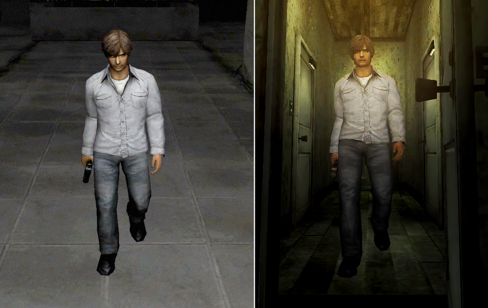
Henry's Yakuza Style Walk?! Character Walking Comparison
![[SH4] Henry's Yakuza Style Walk?!](img/da31.png)
This is a mirror of the DeviantArt version linked above, provided as a backup and for easier access.

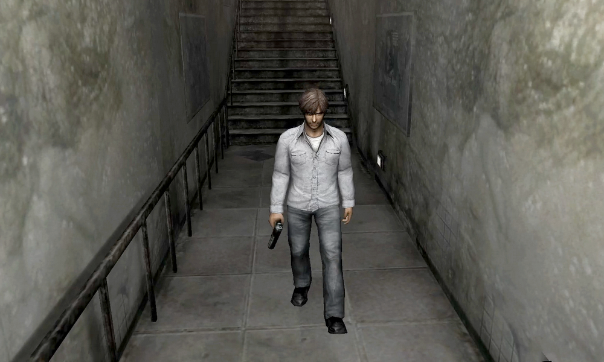
In Japan, people used to say quite often that Henry's way of walking was odd, lol. When he walks around carrying a weapon, it was described as "like a yakuza enforcer, a low level one." Even though he's the protagonist.
At least in Japan, a man taking wide strides and swinging his shoulders is a stereotypical yakuza-style walk motion expressing an intimidating presence. You see plenty of people walking like that in yakuza movies and the Like a Dragon/Yakuza series.
Majima no niisan has a typical movements. And Henry holds up perfectly against his, haha. [*The Silent Hill series came before the Yakuza series. Just to be clear.]
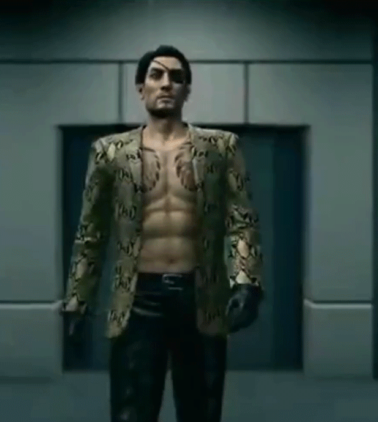
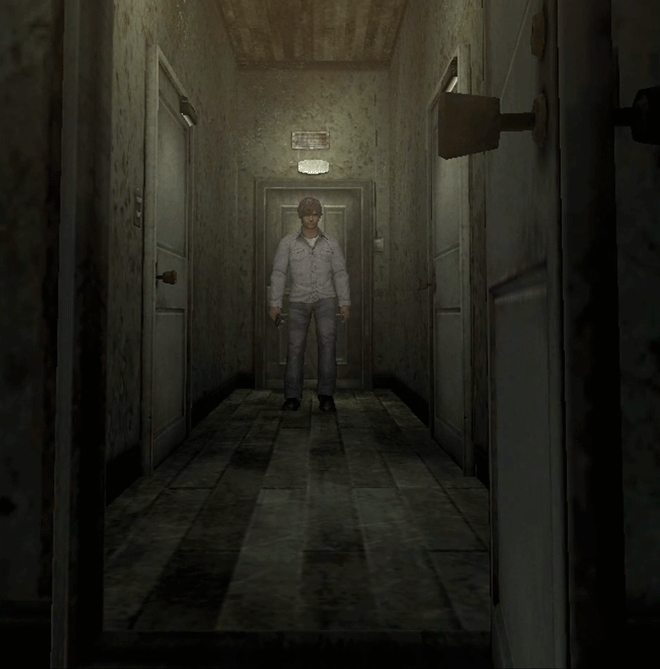
The official profile says, "Someone who's seen as somewhat reserved"...?
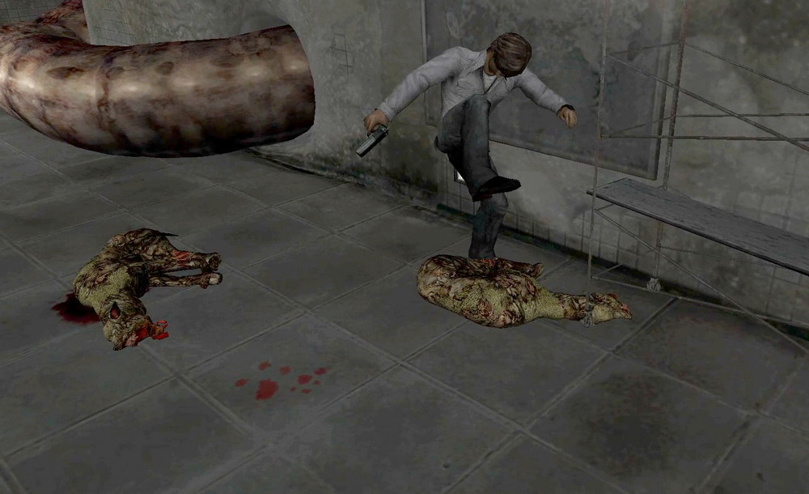
Of course, the devs are Japanese, so they know exactly what they're doing.
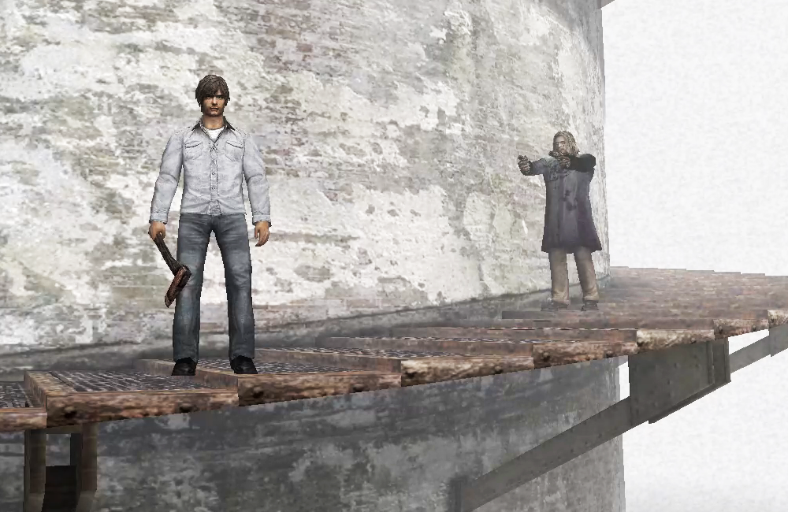
Henry walks in a clearly bow-legged way, and his default stance is already wide-set. That said, when I checked James in SH2, he also had a wide-stride walk. His upper body wasn't nearly this intimidating, though...
So, at first I thought this might be just because of the character model. But it's the same in the cutscenes. That means Henry's set up as a character who walks like this.
✅ Henry, cutscenes
Not just his walk, but his center of gravity feels off too. That's why his walk looks so rough.
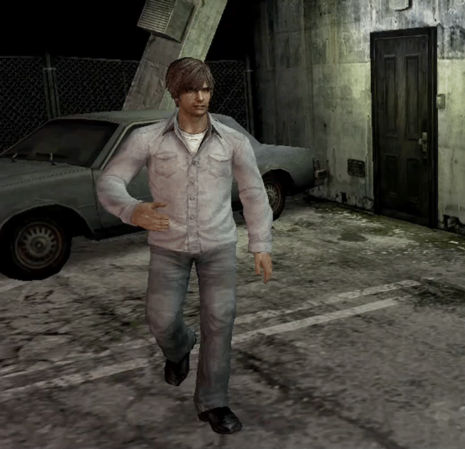
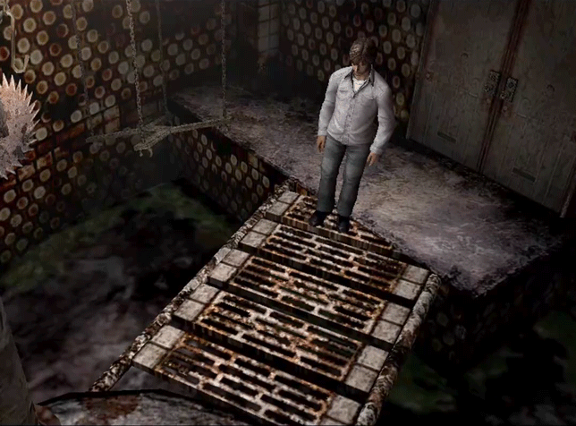
That made me curious, so I checked other characters too.
✅ Walter, cutscene
His legs are hidden by his coat, but his walking style is clean.
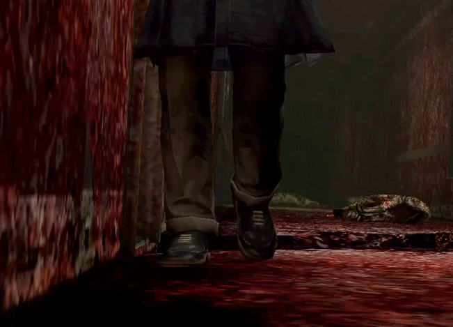
✅ Walter, in-game scene
It's hard to see, at least he's not bow-legged. He walks calmly, without swinging his upper body.
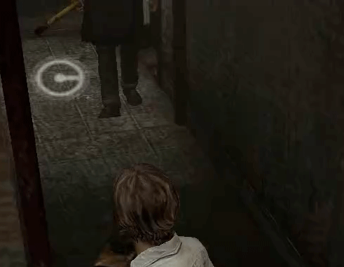
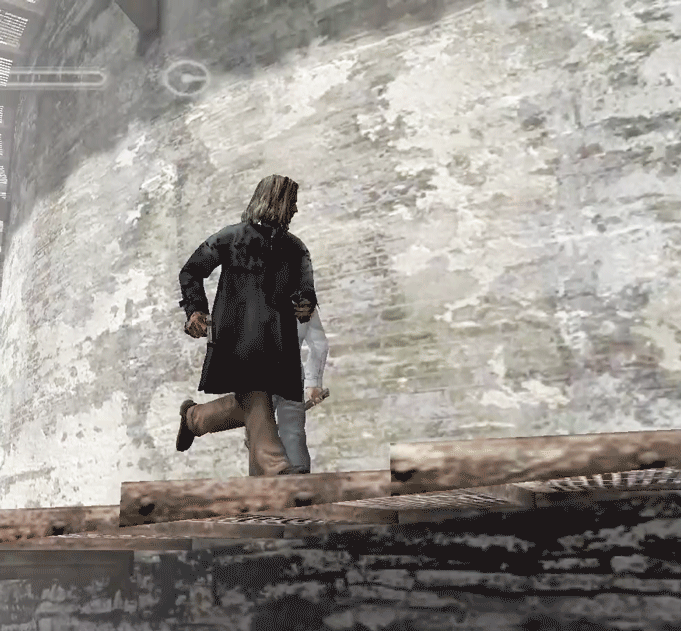
✅ Little Walter, cutscene
A childlike run, with a top-heavy feel.
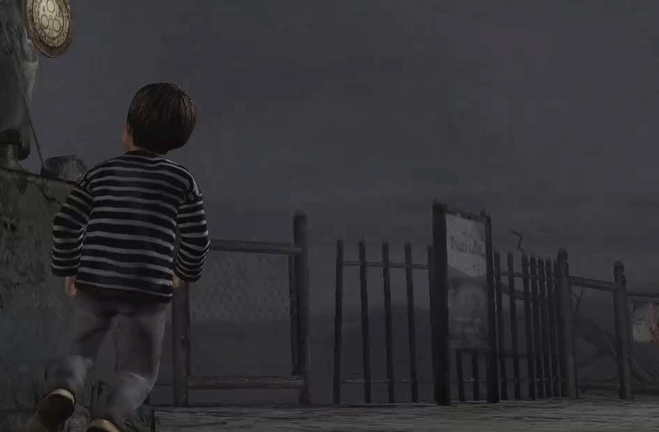
✅ Cynthia, in-game scene
She does a perfect catwalk like a model.
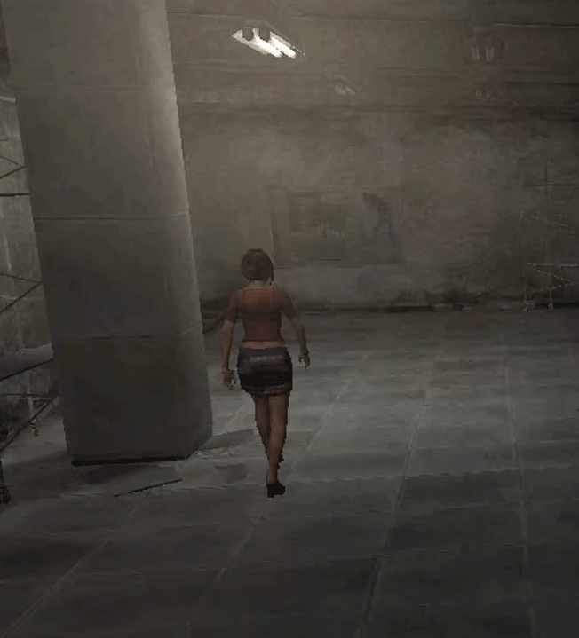
✅ Eileen, cutscene
She drags one leg due to her injury, but her walking style itself is clean. I chose this costume because it makes her walk easier to see...
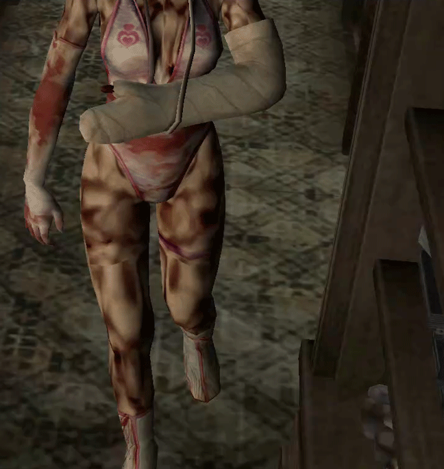
What surprised me when I confirmed these differences was realizing how detailed game character settings can be. Female characters are often designed with great detail, but it's impressive that they've put so much effort into the male characters' settings too! That said, I have no idea what the devs were going for with this rough walk, lol.
Anyway, from now on, every time you play SH4, you won't be able to stop noticing Henry's walk…
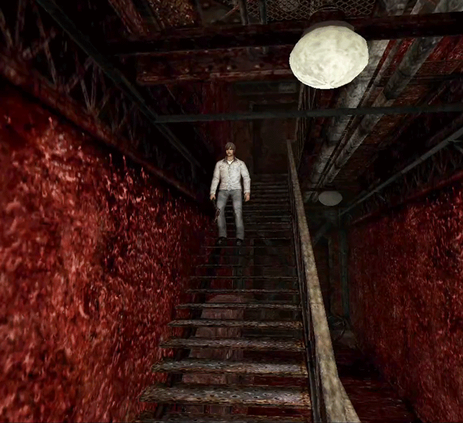
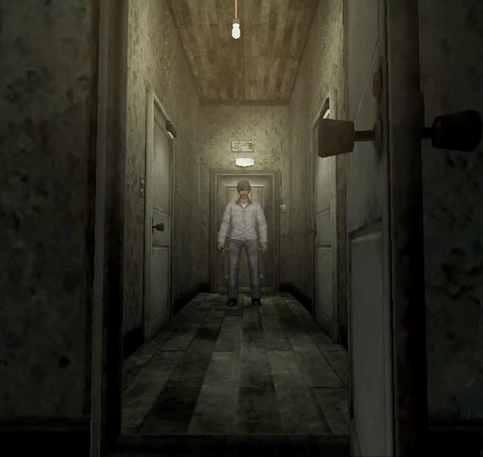